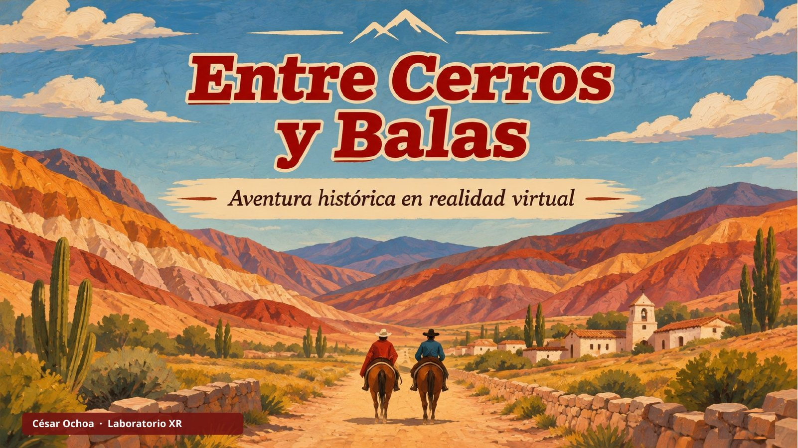

Jujuy, 1817
Las tropas realistas avanzan sobre el norte argentino. Las milicias gauchas resisten y defienden el territorio.
Contexto históricoLas tropas realistas avanzan sobre el norte argentino. Las milicias gauchas resisten y defienden el territorio.
Contexto históricoComandante de las milicias gauchas en Jujuy.
El 1 de marzo de 1817 encabezó la toma del cuartel realista de Humahuaca.
Referente de la defensa del norte.
La comunicación entre las fuerzas patriotas resulta central para la misión ficticia del videojuego.
Un mensaje debe llegar a Güemes.
Dos gauchos mensajeros vinculados con las tropas de Arias atraviesan la Quebrada de Humahuaca.
En el camino, una emboscada realista amenaza con detenerlos.
Aventura ficticia inspirada en 1817Un mismo objetivo: atravesar el recorrido y cumplir la misión.
Cada jugador monta su propio caballo. Sus habilidades son diferentes y complementarias.
Administrar los recursos y tomar decisiones para cumplir la misión.
Aprovechar el terreno, esquivar obstáculos y responder a las amenazas.
Coordinar habilidades distintas para protegerse y avanzar juntos.
Los cerros y caminos de la Quebrada de Humahuaca inspiran el recorrido del videojuego.
Las milicias gauchas aprovecharon el conocimiento del terreno, los ataques sorpresivos y la interrupción del abastecimiento enemigo.
Inspirado en hechos históricosLa experiencia busca despertar interés por:
Videojuego cooperativo de realidad virtual.
La historia de Jujuy se convierte en una aventura.

¿Podrás entregar el mensaje?